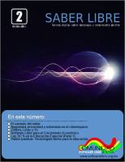

Esta página contiene enlaces a los números publicados de la revista Saber Libre en 2014.
Página web: Saber Libre
Número 3 - 2014 octubre
Descarga (PDF 5.4 MB, español)

Número 2 - 2014 septiembre
Descarga (PDF 6.6 MB, español)
Número 1 - 2014 agosto
Descarga (PDF 4.4 MB, español)